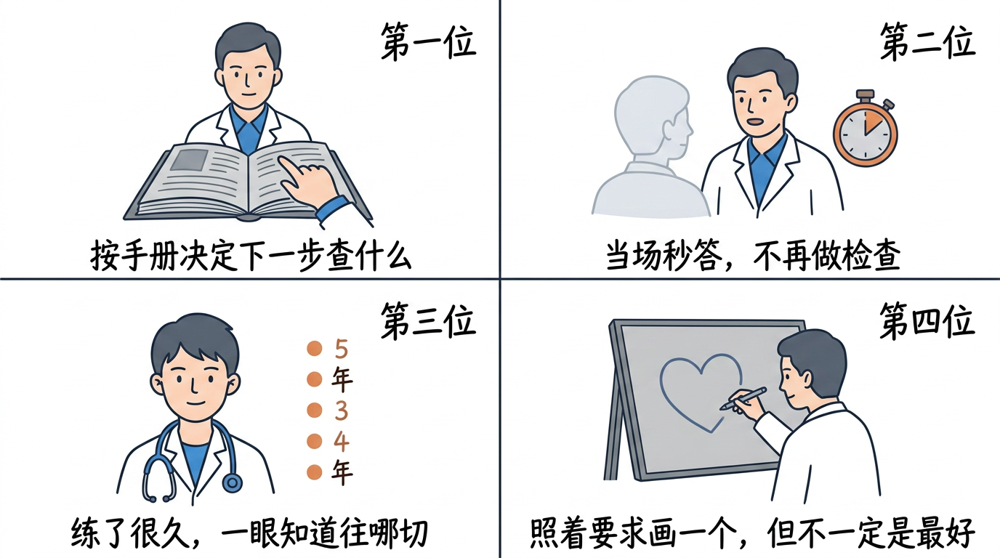
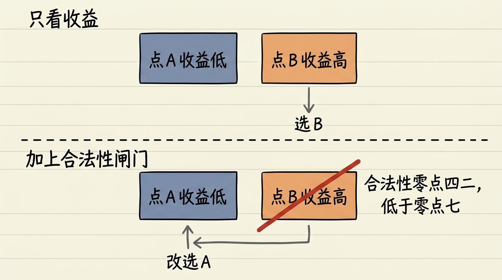
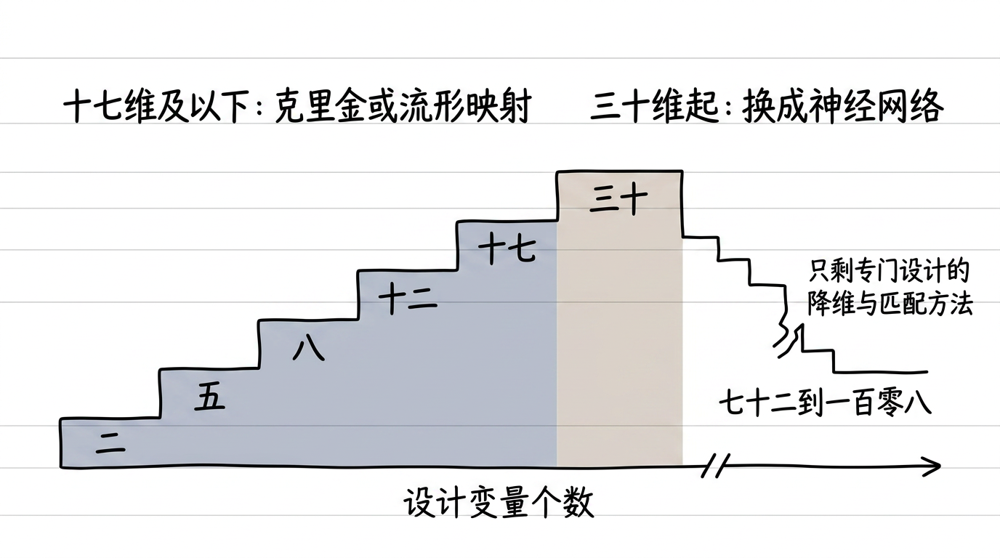
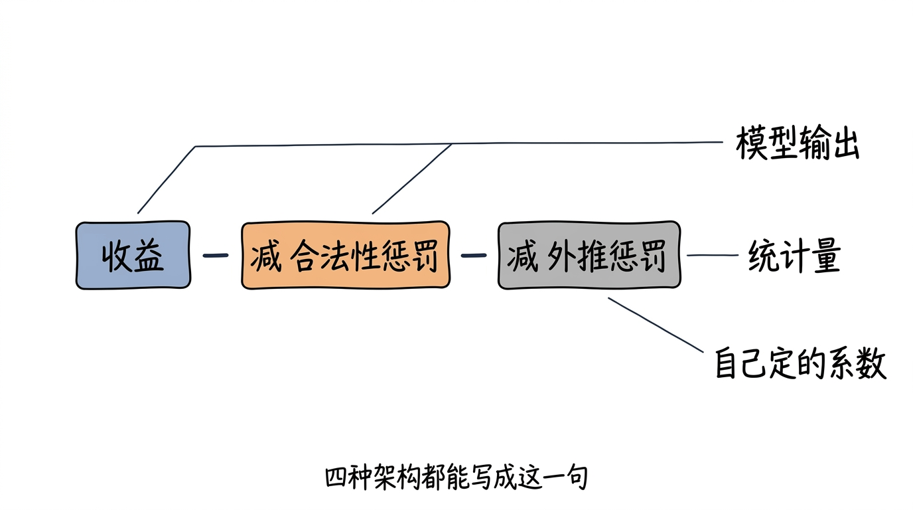
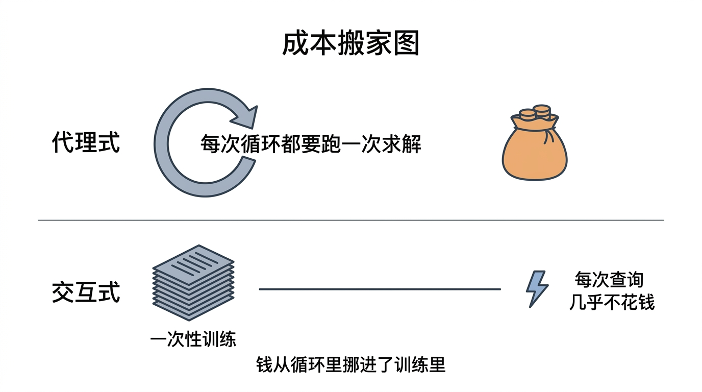
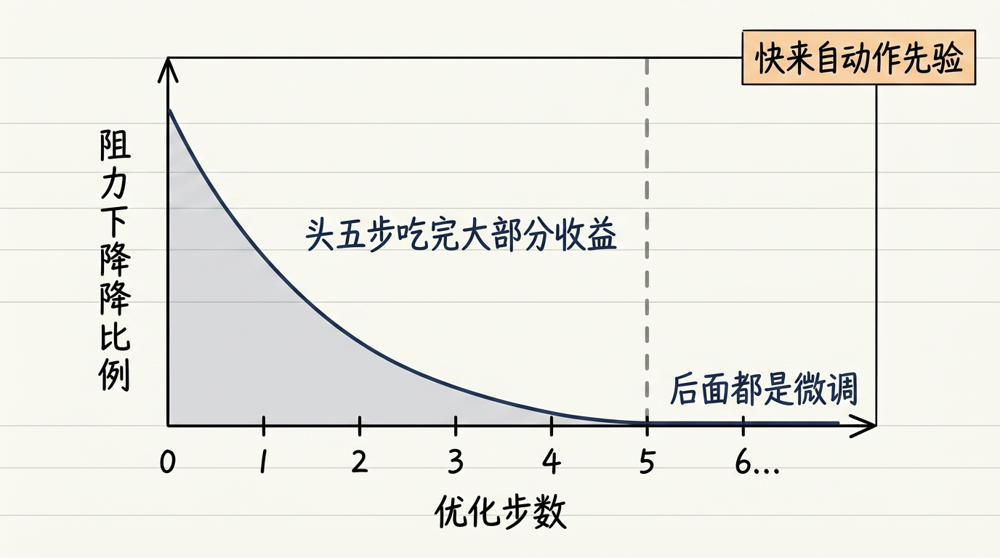
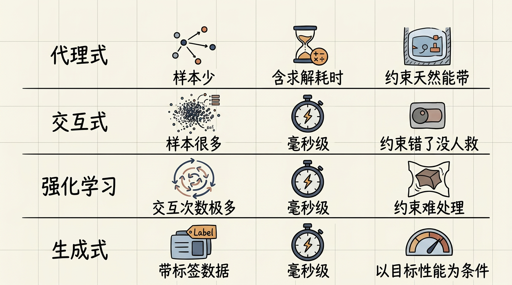
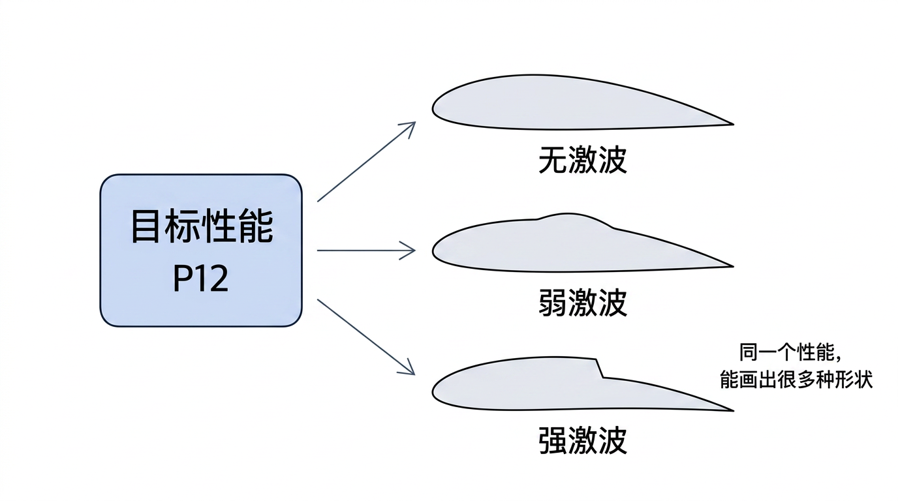
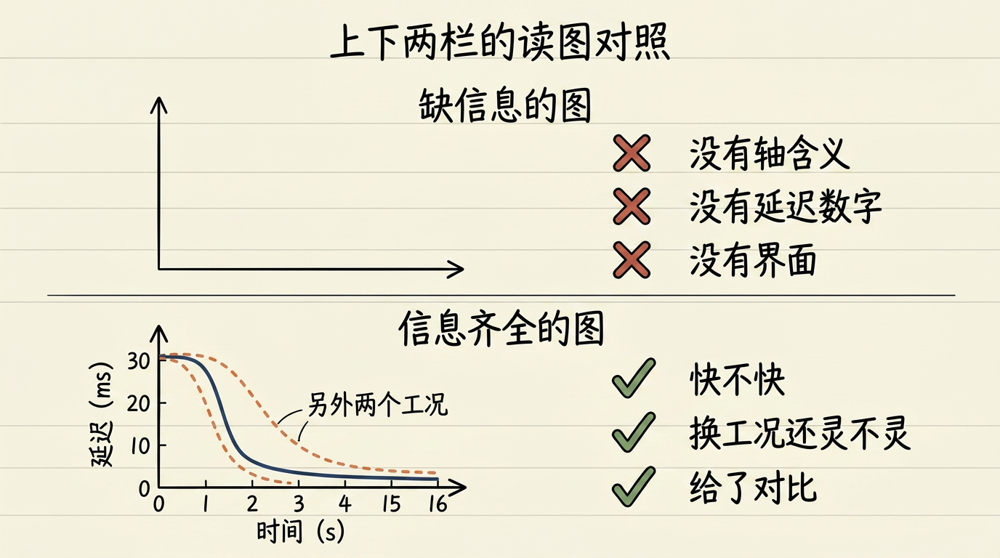
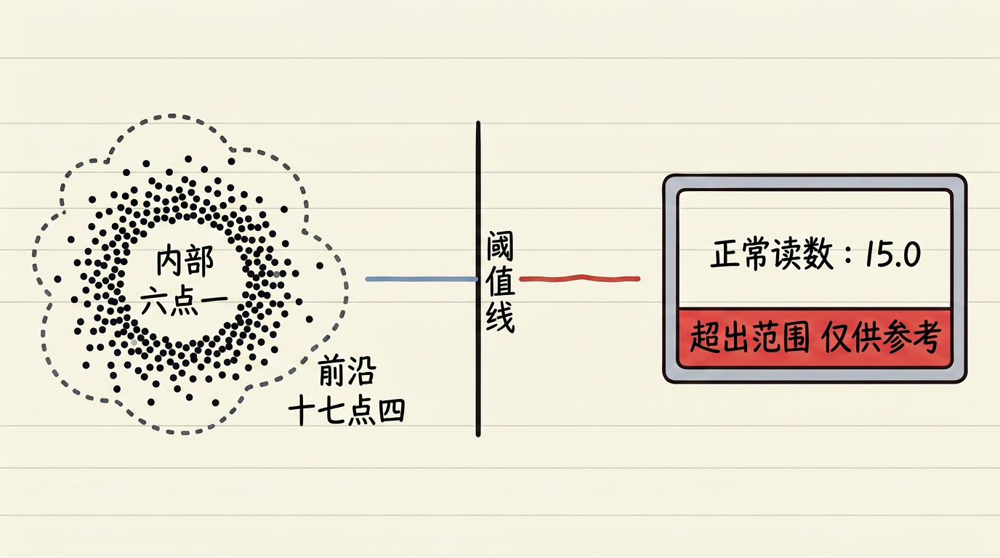

逐张看文字是否清晰不糊、中文是否有错字、结构是否与正文一致。发现问题的图，把 文件名 报给我，我单独重画。
（自检脚本无视觉能力，本页只能由人眼完成。）
| # | 图 | 位置 / 应表达的意思 |
|---|---|---|
| 1 |  | §3 场景引子 四位医生：翻病历本 / 当场秒答 / 练了很久 / 按描述画心 L09v2_s1_four_doctors_zh.png |
| 2 |  | §5(a) 只看收益选 B；加合法性闸门后 B（0.42<0.7）被划掉，改选 A L09v2_s2_ei_filter_zh.png |
| 3 |  | §4 死穴一 维度速查：≤17 维 Kriging/流形映射 → 30 维 ANN → 72–108 专门设计 L09v2_s3_dim_switch_zh.png |
| 4 |  | §5(d) 统一门控式：收益 − 合法性惩罚 − 外推惩罚 L09v2_s3_gate_formula_zh.png |
| 5 |  | §5(b) 钱从循环里挪进训练里（交互式的全部秘密） L09v2_s3_interactive_cost_zh.png |
| 6 |  | §5(c) 头 5 步吃完大部分减阻：快来自动作先验 L09v2_s4_rl_five_steps_zh.png |
| 7 |  | §6 操作流 四架构选型速查：样本 / 延迟 / 约束 / 高维 L09v2_s4_arch_picker_zh.png |
| 8 |  | §5(e) 同一目标性能 → 无激波 / 弱激波 / 强激波三种外形 L09v2_s5_illposed_zh.png |
| 9 |  | §7 数据与图表 Fig.46 缺信息（三红叉）vs Fig.47 信息齐全（三绿勾） L09v2_s5_fig46_vs_47_zh.png |
| 10 |  | §10 你的项目 拒答阈值：最近邻距离超阈值就在前端亮红条 L09v2_s8_platform_gate_zh.png |